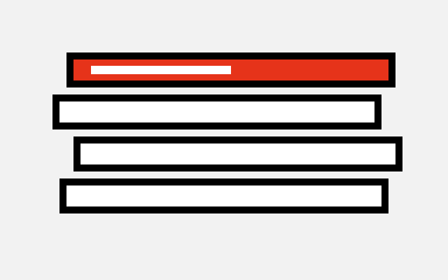
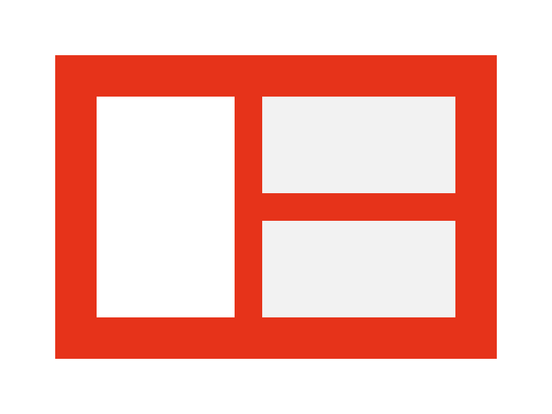
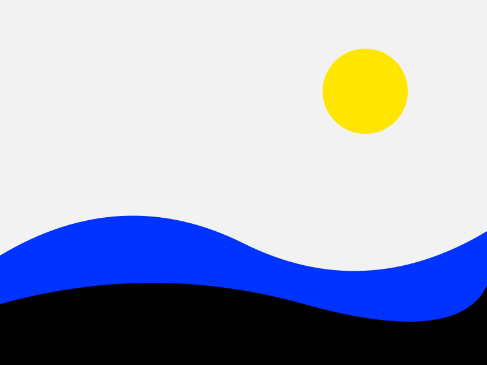
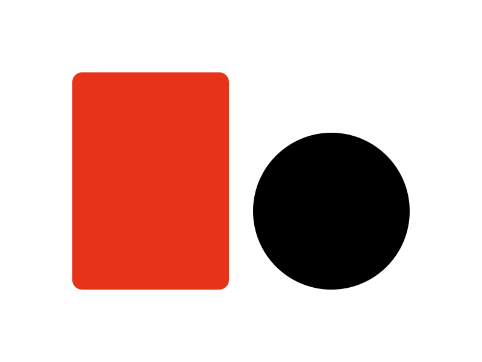
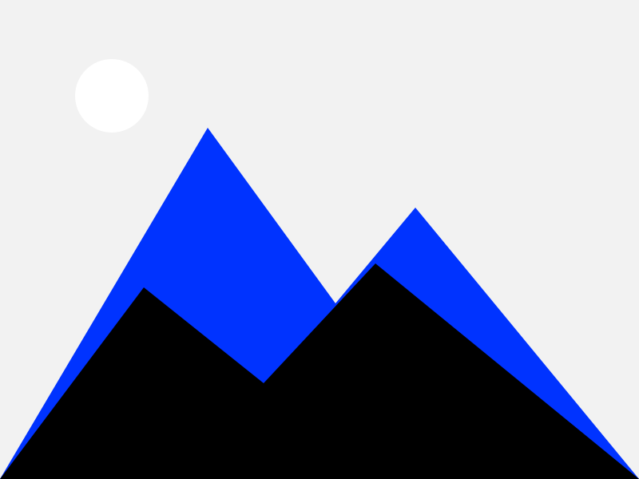
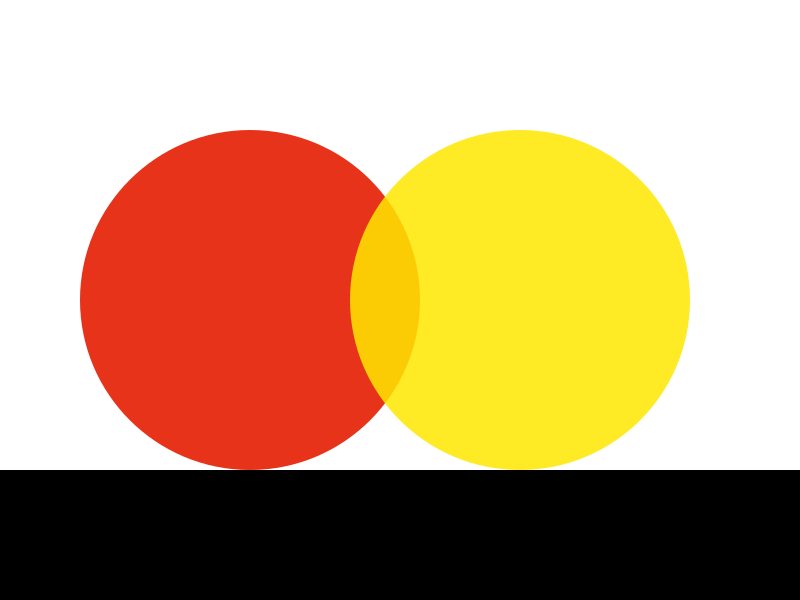
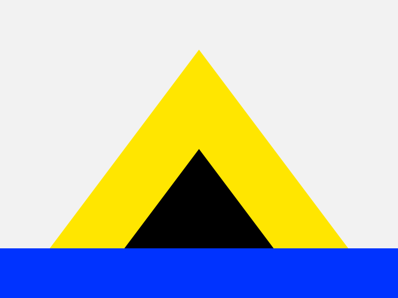
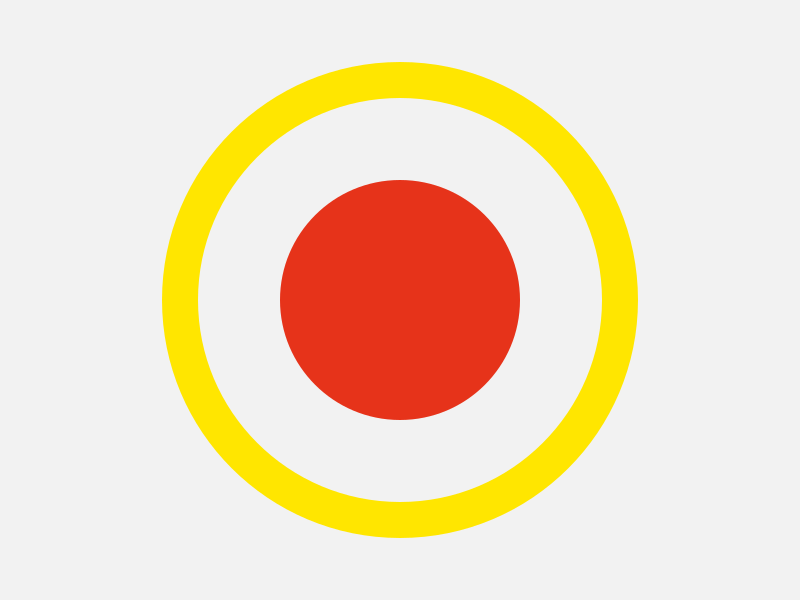
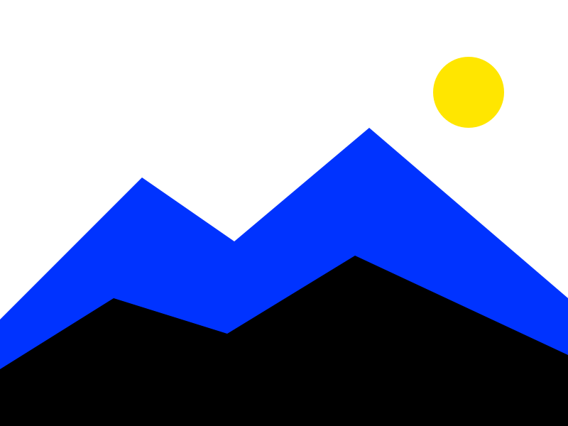

Two stylesheets
theme.css holds the tokens and the palette; global.css holds everything that uses them. Nothing else to load but the fonts.
A retemplate template
Vol. 1 · No. 1Thursday 4 September 2026Free, forever
Front page
Brutal News is a newspaper that never learned to whisper. Every box is ruled in three pixels of ink, every button throws a hard shadow when you reach for it, and the palette is the stuff you find in a newsagent's window: hot red, acid yellow, cobalt, signal green.
Underneath the shouting it is the same template as every other one here: the same markup, the same components, the same two stylesheets. Only the ink is different.
Inside
This edition
Take the css/, js/theme.js and assets/ folders and you have the whole template. The three cards below are the ordinary card, with an image, an icon, and neither. Each is a ruled box; the image is ruled off from the text.
theme.css holds the tokens and the palette; global.css holds everything that uses them. Nothing else to load but the fonts.
White paper by day; the same page printed in reverse by night. The toggle in the corner cycles auto, light and dark.
The palette block in theme.css pastes straight into a retoken site. See the tokens.
Horizontal cards put the media on the left or, with card-media-end, on the right. On a narrow screen they stack.

The image takes a little over a third of the width and the text takes the rest.

The same card with the order flipped. The markup is the same; only one class differs.
Every template has one feature card with an effect that suits it. Brutal News's inverts to ink on red and throws a shadow when you hover it.

Hover it. A brutalist page has two states, on and off, and this is what on looks like.
The fifty-fifty block gives an image half the width and the text the other half. Add fifty-fifty-reverse and the image moves to the right.

Image left
A heading, a paragraph and a single call to action. That is the whole pattern, and it carries most front pages.
How it is built
Image right
Alternate them down a page and the eye is led from side to side without any extra styling.
Read the docsAccordions are native <details> elements. Give a group of them the same name and opening one closes the others, with no script.
No. Copy the folder, link the two stylesheets and the one script, and write HTML.
Because 1px is a hairline and 2px is a border. Three is a rule, the kind a newspaper draws between things it wants you to read separately.
Anything from 2024 on: the template relies on light-dark(), :has(), popovers and exclusive accordions.
A single accordion stands on its own.
css/, js/theme.js and assets/. The README lists it.
Click any image. The lightbox is a <dialog>; the arrows and the thumbnails are plain links, and Esc closes it.







Buttons come in three kinds and three sizes and jump towards you when hovered. The switch is a square slider. Badges are stamps; banners are ruled notices.
Tables sit inside a ruled wrapper that scrolls sideways when they are wider than the page.
| Component | Rule | Script | Docs |
|---|---|---|---|
| Card | 3px, image ruled off | none | cards |
| Navbar | 6px below | none | navbar |
| Banner | 3px, 12px on the left | none | banner |
| Switch | 3px, square | none | switch |
| Theme toggle | 3px | theme.js | theme |
Dialogs are native too. The button below opens one; the dialog closes itself through a form.
Prose is what most pages are made of, so .prose styles every construct a markdown renderer produces. Quotes are set in the display face behind a red rule. The blog post page runs the full test document through it; defaults shows every bare element.
A rule is a line that means something.
Flip the theme toggle. Dark mode is not a different design; it is the same paper printed white on black, with the same hues at the same volume.